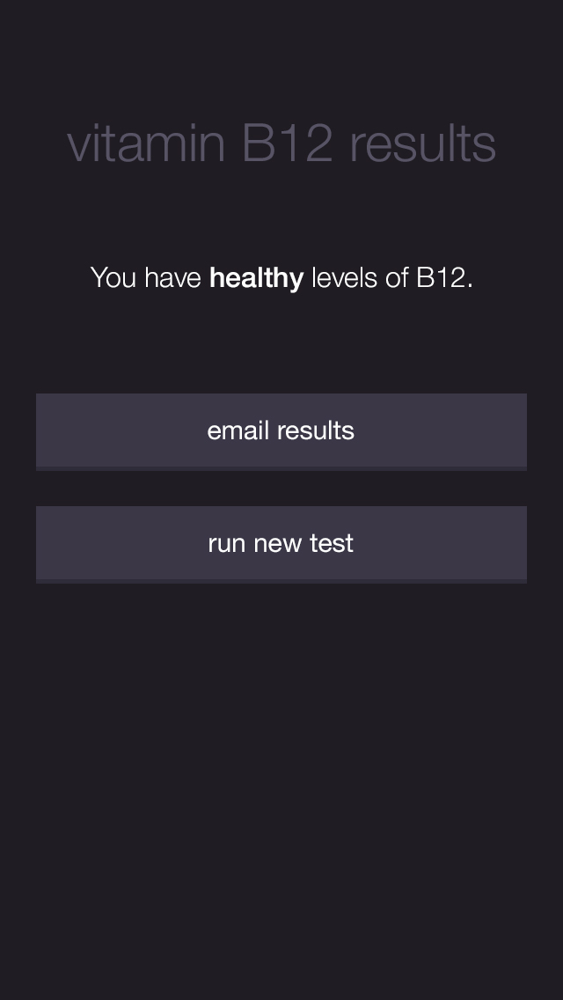

Interaction Design
Brainstorming and Storyboarding
The team working on the NutriPhone companion app consisted of several researchers and another designer. It was important to me that all members of the team, even those who were not designers, felt like they could have their voices heard during the design process. I organized a brainstorming workshop earlier on where everyone on the team came up with their own storyboards of how they saw the app being used. We presented these to each other, and then identified key moments in the testing process. After coming to a consensus on how we saw the app being integrated in the testing process, we worked independently to come up with rudimentary wireframes. We then presented these to each other, and identified what interactions we thought were most successful.
During this meeting we also established that our target audience would be doctors and nurses at the clinic where we would be deploying the app for our first in-the-field trial.
Higher Fidelity Wireframes
These early wireframes feature buttons that allow users to switch to different kinds of strip tests. We later found out that the focus of the first round of deployment would be solely vitamin B12 tests, so we removed this functionality from our plans, and as a result, later mocks do not feature these buttons.
In these wireframes, I included the idea of an animation illustrating how to insert a strip. However, our intended users were nurses who were likely to already know how to insert a strip, so perhaps the animation was unnecessary. After trying to insert a few of these strips in the actual add-on myself and watching my teammates struggle as well, I realized that a much bigger issue that needed to be addressed was helping people put the strips in the correct way. A live camera view would allow users to see if the strips had been inserted correctly, giving clarity to what was going on inside the closed-off add-on. I initially considered designing custom camera view with an overly that could help users better align the strips, but this was too engineering intensive and the idea had to be scrapped. Regardless, a camera view was included in future mocks at least provide slightly more insight on what is actually going on inside the add-on.
Visual Design
Displaying Results
An earlier exploration of the results screen is on the left, and the final results screen is on the right, below. The clinic we are planning to deploy to is unlikely to have any patients that have high values of b12, so we instead opted to stop the max value of the scale at a lower number to visually stretch out the range of low values. I also included yellow in the later mocks to visually soften the transition between high, medium, and low values.
During a research showcase, I watched a number of people interact with prototypes of the app. I was surprised to see that a number of people tried to interact with the scale, because of the lightly skeuomorphic presentation. Moving forward, I hope to redesign the scale to make it look a bit more “flat” and less like an interactive element.
Overall Theme and Coloring
Our intended audience for our application was doctors and nurses at a clinic taking tests for patients. The goal of final visual style was to stay unobtrusive and fade away into the background, while also looking professional, and making the results very prominent.
Future Research and Testing
Which results presentation is most successful?
Our team’s lead researcher wanted to extend our project further by getting a better understanding of what kinds of data presentations were most successful. I came up with a number of alternative screens with different data presentation, which were to be shown in a separate study exploring which data presentation people had the easiest time understanding.
We are still waiting on the results from this study, but the data presentations being tested can be seen below.


- 
Are people who recieve low readings more likely to read more information?
Our lead researcher wanted to explore whether the type of reading a user received affected how much information they read post-testing about the vitamin level they were just tested for. For this next research question, half of our participants went through the app’s flow and saw a low reading and half of our participants went through the app’s flow and saw a high reading. After seeing their reading, a button was added to allow participants to learn more about vitamin B12. Again, we are still waiting on results from this study.
We are still waiting on the results from this study, but the InVision prototypes are live and you can try them out for yourself. The prototype with a low reading can be found here and the prototype with a high reading can be found here.